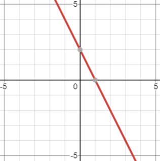
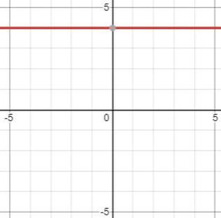
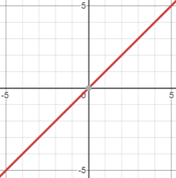

Linear Functions
Contents
Linearity
Linear functions describe functions that preserve both additivity and scalar multiplication.
To break this jargon down:
- Additivity: Property of a function where the following holds true: \(f(u + v) = f(u) + f(v)\)
- Scalar multiplication: Property of a function where the following holds true: \(f(cu) = cf(u)\)
To think about this much more easily, Linear Functions are functions where the input variable has a degree (that is, exponent value) of 1 (like \(f(x)=2x + 2\)) or 0 (like \(f(x)=2\)).
Types
Linear functions present themselves like the following chart. Notice that the graph is just a line (hence, LINEar)

Figure 1.4.1: Graph of linear function: f(x) = -2x + 2
Constant functions are a special type of linear function where, for all output, the output is the same value. These are of the form \(f(x) = c\), where \(c\) simply represents some numerical value.

Figure 1.4.2: Graph of constant function: f(x) = 4
Identity: A special type of linear function where the output is the same as the input. It is of the form, \(f(x) = x\).

Figure 1.4.3: Graph of identity function: f(x) = x
Forms
Linear functions have important characteristics beyond the preservation of additivity and scalar multiplication.
Linear functions are typically of the form:
\[ y = mx + b \]
Where \(y\) is the output variable (could be \(f(x)\), \(g(x)\), \(z\), etc.), \(x\) is the input variable, and:
-
Slope (\(m\)): The number describing the direction and steepness of the function’s behavior.
- Also known as rate of change.
- A function’s steepness is given by the magnitude of the slope (that is, how big).
- A function’s direction is given by the sign of the slope. That is:
- A positive slope (\(m > 0\)) means the output grows as the input grows.
- A negative slope (\(m < 0\)) means the output shrinks (“grows” more negative) as the input grows larger.
- A slope of zero (\(m=0\)) means the output remains the same no matter the input. That is, this is a constant function!
-
Intercept (\(b\)): The constant number which essentially provides a shift of the function’s values.
- This may also be thought of as the “default” value for \(y\), which is the value of \(y\) when \(x=0\). This is known as the \(y\)-intercept.
For this reason, the form, \(y=mx+b\) is known as slope-intercept form since it describes both the slope and the intercept of a single function.
Another form that may be utilized is the point-slope form, which enables defining a function utilizing two ordered pairs.
\[ y - y_1 = m(x-x_1) \]
The first pair is going to be \((x, y)\), as you are defining the behavior between \(x\) and \(y\). The second pair will be ANY point on the line, represented by \((x_1, y_1)\).
Point-slope form may always be simplified into slope-intercept form, and slope-intercept form may always be expanded into point-slope form (so long as the point chosen resides on the line).
Example:
\[y - 3 = 2(x-4)\]
\[y - 3 = 2x - 2(4)\]
\[y - 3 = 2x - 8\]
\[\boxed{y = 2x - 5}\]
Point-slope form is converted to slope-intercept by solving for y!
Slope-intercept form is more open-ended, since you may chose any point. You simply extract the slope and choose a point on the line. For instance: \(y = f(x) = 2x - 5\).
Say we choose to utilize \(x_1=12\).
First, solve for \(f(12)\): \[y = f(12) = 2(12) - 5 = 24 - 5 = \boxed{19}\]
This is your \((x_1, y_1)\) ordered pair. Now, we know that the original slope is 2 (since, in slope intercept form, we have \(y = \underline{2}x - 5\)). Plug this into the point-slope form template:
\[y - y_1 = m(x - x_1)\]
\[y - 19 = 2(x - 12)\]
To confirm there are no more mistakes, you can convert it back to slope intercept form, to ensure that the original form is the same as this new form!
\[y - 19 = 2(x - 12)\]
\[y - 19 = 2x - 24\]
\[\boxed{y = 2x - 5} \; \checkmark\]
Closing
| Previous | Next |
|---|---|
| ← 1.3.0 | 1.3.2: Forms → |